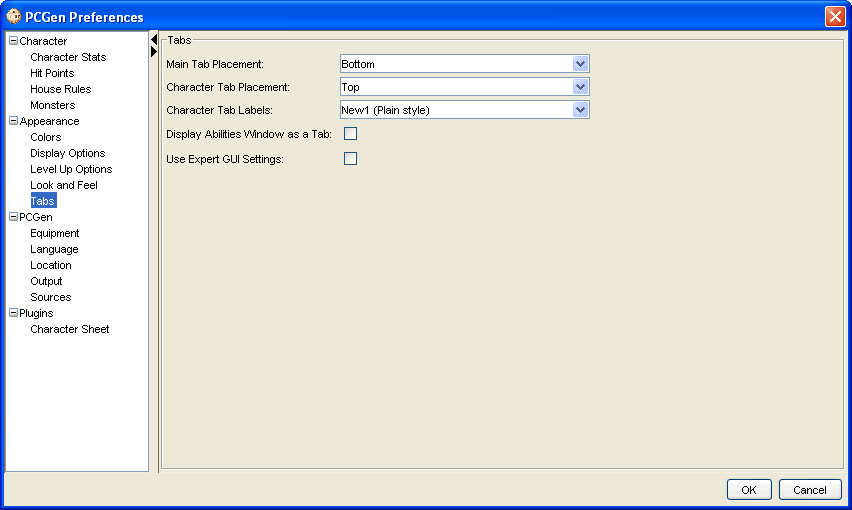

Appearance Tab Options

The
Tabs
menu option will allow you to:
-
Set the Main Tab Placement
. Sets the main tabs
bottom, top, left or right (bottom by default).
-
Set the Character Tab Placement
. Sets the
character tabs bottom, top, left or right (top by default).
-
Set what the Character Tab labels should look
like
. Plain, Epic, Race or Nethack style.
-
Display the abilities window as a Tab
will
display the abilities window as a tab grouped with the main
tabs.
-
Use Expert GUI Settings
will grey out menu
selections such as create new character when no sources are loaded.
When this option is left unchecked a dialog window will open
warning the user to load sources before trying to create a new
character.